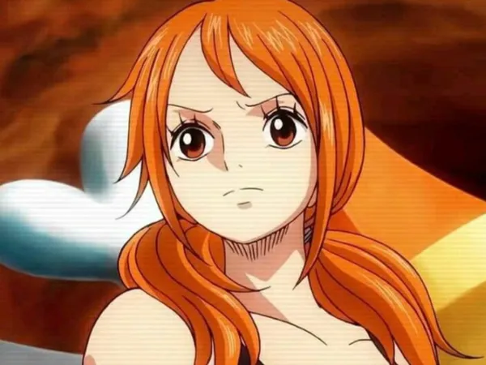
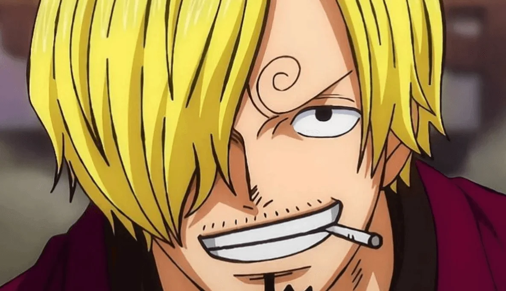
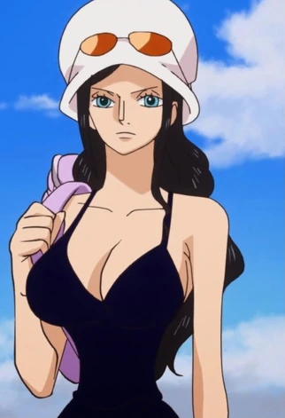
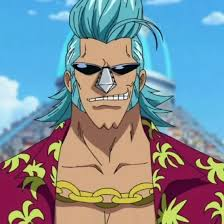
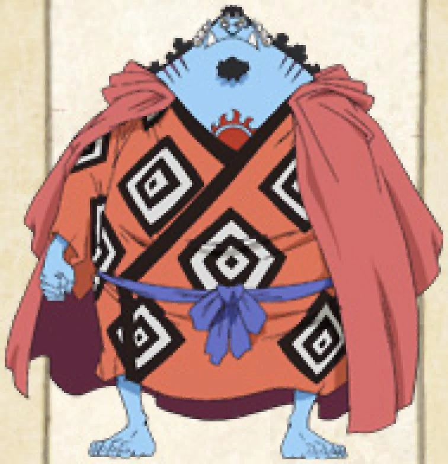

Tripulação do Chapéu de Palha
Luffy

Luffy, mais conhecido como "Luffy Chapéu de Palha" ou simplesmente "Chapéu de Palha", é o fundador, capitão e combatente mais forte dos cada vez mais infames e poderosos Piratas do Chapéu de Palha. Ele busca destemidamente o lendário tesouro do falecido Gol D.
Zoro

Na história, Zoro era um caçador de piratas que por fim se torna um quando é convencido pelo protagonista Monkey D. Luffy a ser o primeiro membro de sua tripulação, os Piratas do Chapéu de Palha. Dentro do grupo, Zoro tem a função de combatente e muitas vezes assume o papel de imediato do bando.
Nami

Nami, a "Gata Ladra"[20] é a navegadora dos Piratas do Chapéu de Palha e uma dos Oficiais Seniores da Grande Frota do Chapéu de Palha.[4] Ela é o terceiro membro da tripulação e a segunda a entrar, fazendo isso durante o Arco Orange Town.[21] Ela é irmã adotiva de Nojiko depois que os dois ficaram órfãos e foram acolhidos por Bell-mère.
Ussop
.webp)
Usopp (ウソップ, Usopp, também conhecido como God Usopp) é um personagem fictício da série em mangá One Piece criada por Eiichiro Oda. Ele faz parte do grupo principal, os Piratas do Chapéu de Palha, onde atua primariamente como atirador mas quando necessário cumpre outras posições como inventor, escultor e pintor. Usopp é caracterizado por sua covardia e fraqueza, e ainda por cima é um grande mentiroso, mas embarca com o protagonista Monkey D. Luffy almejando se tornar um bravo guerreiro dos mares assim como seu pai Yasopp. Ao longo da história ele se torna cada vez mais valente e por um certo tempo desenvolve um alter ego chamado Sogeking, Rei dos Atiradores (そげキング, Sogekingu). Uma piada recorrente é que suas mentiras em algum momento acabam se tornando realidade.
Sanji

Vinsmoke Sanji (ヴィンスモーク・サンジ, Vinsumōku Sanji, também conhecido como Sanji Perna Preta) é um personagem criado por Eiichiro Oda para o seu mangá e anime One Piece. Ele é introduzido ainda na primeira saga da história como um cozinheiro do restaurante-navio Baratie e depois passa a trabalhar para o capitão Monkey D. Luffy no seu bando dos Piratas do Chapéu de Palha. Sanji é caracterizado por ser elegante e mulherengo, mas também um grande lutador que utiliza somente seus pés e pernas para nunca comprometer suas mãos e assim afetar sua carreira como chef de cozinha. Com um passado inicialmente misterioso, é revelado mais tarde que Sanji é um príncipe do Reino Germa que deserdou sua família e abandonou seu sobrenome Vinsmoke após anos de abusos.
Chopper

Tony Tony Chopper é uma rena. Ele é o médico da tripulação dos Piratas do Chapéu de Palha. Chopper é uma rena que, após comer a Hito Hito no Mi, adquiriu a habilidade de se transformar e raciocinar como os humanos. Ele é o sexto membro e um dos poucos membros da tripulação que nasceu na Grand Line, numa ilha chamada Drum. Por ter sido confundido como mascote, a recompensa atual de sua captura é de apenas 1.000.[1] Mesmo sendo considerado "Mascote" pela marinha, ele foi nomeado um dos comandantes do Luffy, sendo assim seguindo a lógica da sua recompensa o 9° Comandante.
Robin

Nico Robin, também conhecida como "Criança Demônio" e "Luz da Revolução",[19] é a arqueóloga dos Piratas do Chapéu de Palha. Ela é a única sobrevivente da ilha destruída de Ohara, localizada no West Blue. Como resultado, ela é atualmente a única pessoa no mundo com a capacidade de ler e decifrar Poneglyphs, uma habilidade que é considerada proibida e que ameaça o Governo Mundial.
Franky

Franky é o carpinteiro dos Piratas do Chapéu de Palha. Ele é um cyborg de 36 anos de Water 7 e foi introduzido na história como o líder da Família Franky, um grupo de desmantelamento de navios. Ele foi originalmente chamado de "Cutty Flam" até trocar seu nome original por seu apelido a pedidos de Iceburg para esconder sua identidade. Franky e seus seguidores foram inicialmente introduzidos como antagonistas do Arco Water 7 contra os Chapéus de Palha até as circunstâncias forçá-los a se tornarem aliados. A pedido da Família Franky, Franky foi permitido se juntar aos Chapéus de Palha para realizar seu sonho de criar e dirigir um navio capaz de dar a volta ao mundo, o Thousand Sunny. Ele é o oitavo membro da tripulação dos Chapéus de Palha e o sétimo a se juntar ao bando de Luffy. Ele também é o segundo membro a ser um ex-antagonista (o primeiro sendo Nico Robin). Ele tem uma recompensa de 394.000.000. Ele é originário do South Blue, de onde saiu 32 anos atrás como uma criança de apenas quatro anos de idade. Franky ainda foi considerado pela marinha um dos 9 comandantes de Luffy, sendo o 6° Comandante, seguindo a lógica da sua recompensa (embora na foto de seu cartaz de procurado esteja a foto do Sunny).
Brook

Brook é o Músico dos Piratas do Chapéu de Palha. Ele é um esqueleto que os Chapéus de Palha encontraram a bordo de um navio fantasma depois de entrarem no Triângulo Florian. Ele é um usuário de Akuma no Mi que comeu a Yomi Yomi no Mi, o que o torna um pseudo-imortal por causa de seus poderes. Ele é o nono membro do Bando do Chapéu de Palha, e o oitavo a se juntar à tripulação de Luffy. Ele é também um dos dois Espadachins a bordo de seu atual navio, o outro sendo Zoro. Ele preenche o cargo do tão esperado músico que Luffy queria para sua tripulação desde que sua jornada começou. Brook foi nomeado pela marinha como um dos comandantes de Luffy, Sua recompensa atual é de 383.000.000.
Jimbei

"Cavaleiro do Mar" Jinbe[1] é o timoneiro dos Piratas do Chapéu de Palha. Ele é o décimo membro da tripulação e o nono a se juntar, fazendo isso durante o Arco País de Wano.[19]
Jinbe é um homem-peixe sendo um tubarão-baleia e um poderoso mestre do karatê Homem-Peixe. Seu sonho é realizar o desejo moribundo de seu ex-capitão Fisher Tiger de coexistência e igualdade entre humanos e homens-peixe.
Ele era um membro dos Piratas do Sol, se tornando seu segundo capitão após a morte de seu capitão original, Tiger.[8] No decorrer da história, se tornou um dos Shichibukai, embora tenha renunciado durante a Batalha de Marineford.[4][8]
Antes e durante a guerra, Jinbe fez amizade com Monkey D. Luffy e dois anos depois aliou-se a ele e sua tripulação para evitar o golpe de estado dos Novos Piratas Homens-Peixe contra o Reino Ryugu da Família Real de Neptune. Luffy posteriormente o convidou para se juntar aos Piratas do Chapéu de Palha, mas Jinbei adiou até romper os laços com Big Mom durante o Arco Ilha Whole Cake.[20] Depois de ficar para trás em Totto Land para proteger os Piratas do Sol da ira de Big Mom, Jinbe voltou para os Chapéus de Palha durante o Terceiro Ato do Arco País de Wano, anunciando oficialmente seu status como membro da tripulação.
.jpg)